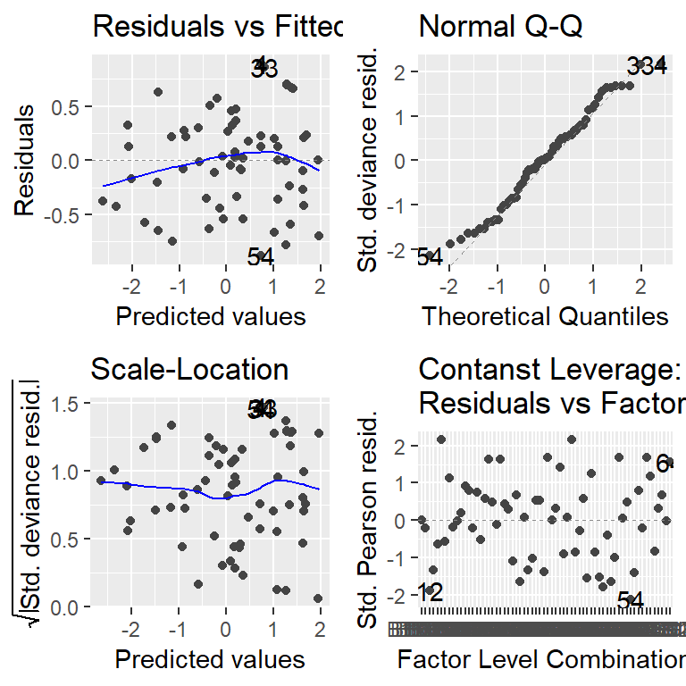

1 Trt Factor - RCBD - Binomial Response
Datensatz
library(data.table) # bessere Datenmanipulation
library(ggplot2); library(ggfortify) # bessere Plots
library(emmeans) # adjustierte MittelwerteIn diesem Beispiel wurden 16 Weizensorten in einer randomisierten vollständigen Blockanlage mit 4 Wiederholungen geprüft.
Die Auswertung dieses Datensatzes ist auch hier in der
PROC GLIMMIXSAS Dokumentation beschrieben.
Allerdings wurde nicht wie so oft in den vorangegangenen Beispiel der Ertrag gemessen, sondern die Anfälligkeit gegen die Hessenfliege (Mayetiola destructor). Dies geschah indem in jeder Parzelle die Gesamtzahl an Pflanzen (n), sowie die Anzahl derer Pflanzen, die befallen waren (y) bestimmt wurden. Demnach repräsentiert der Anteil y/n die Anfälligkeit gegen die Hessenfliege und kann in % angegeben werden. Wir können eine neue Spalte erstellen, die diesen Anteil angibt.
wheat[, anteil := y/n] # erstelle Spalte "anteil"print(wheat, nrows=10)## block gen y n anteil
## 1: B1 G14 2 8 0.2500000
## 2: B1 G16 1 9 0.1111111
## 3: B1 G07 9 13 0.6923077
## 4: B1 G06 9 9 1.0000000
## 5: B1 G13 2 9 0.2222222
## ---
## 60: B4 G10 6 6 1.0000000
## 61: B4 G02 8 12 0.6666667
## 62: B4 G11 7 9 0.7777778
## 63: B4 G05 10 11 0.9090909
## 64: B4 G16 7 15 0.4666667str(wheat)## Classes 'data.table' and 'data.frame': 64 obs. of 5 variables:
## $ block : Factor w/ 4 levels "B1","B"..
## $ gen : Factor w/ 16 levels "G01","..
## $ y : int 2 1 9 9 2 7 6 8 7 8 ...
## $ n : int 8 9 13 9 9 14 8 11 12 ..
## $ anteil: num 0.25 0.111 0.692 1 0.2..
## - attr(*, ".internal.selfref")=<exter..Deskriptive Statistik
Erst wollen wir ein Gefühl für den Datensatz bekommen und betrachten einen Boxplot für die Anteile der befallenen Pflanzen pro Sorte. Die Füllfarben die Boxen sind dieselben Farben wie im Feldplan und wurden zuvor von uns im Vektor genfarben gespeichert - mehr Infos dazu hier.
boxplot(anteil ~ gen, col=genfarben, data=wheat, las=2)# Schließende Statistik ## Generalisiertes Modell
Da es sich in diesem Beispiel bei der Zielvariable um einen Prozentwert bzw. einen Anteil handelt, liegen die Werte zwischen 0 und 1 (i.e. 0-100%). Wir haben also binomialverteilte Daten und wollen ein generalisiertes lineares Modell anpassen (mehr dazu hier). Dies geht z.B. mit der glm() Funktion. Bezüglich der Effekte im Modell verfahren wir bei einer einfaktoriellen ANOVA in einem RCBD.
mod <- glm(y/n ~ block + gen, family=quasibinomial(link="logit"), data=wheat)Wie man sehen kann, wäre das vorige Berechnen der anteil-Spalte für das Aufstellen des Modells nicht nötig gewesen, da wir direkt y/n als Zielvariable schreiben können. Als erwartete Verteilung schreiben wir hier family=quasibinomial, welche sozusagen eine generelle/robustere Version der genannten Binomialverteilung für die Fehler annimmt (mehr dazu hier). Der Zusatz (link="logit") ist hier eigentlich überflüssig, weil dies die standardmäßige Linkfunktion für binomialverteilte Daten ist. Sie wird hier lediglich zur Verdeutlichung mit ins Modell geschrieben. Da glm() eine Basis-Funktion von R ist - also kein extra package benötigt - können Residuenplots wieder einfach mit der autoplot() Funktion des ggfortify packages betrachtet werden:
autoplot(mod) # Residuenplots ## Test der festen Effekte
anova(mod, test="F")## Analysis of Deviance Table
##
## Model: quasibinomial, link: logit
##
## Response: y/n
##
## Terms added sequentially (first to last)
##
##
## Df Deviance Resid. Df Resid. Dev F Pr(>F)
## NULL 63 28.023
## block 3 0.4936 60 27.529 0.6870 0.5647
## gen 15 15.0629 45 12.466 4.1929 9.285e-05 ***
## ---
## Signif. codes: 0 '***' 0.001 '**' 0.01 '*' 0.05 '.' 0.1 ' ' 1Es soll an diesem Punkt angemerkt werden, dass eine ANOVA im ursprünglichen Sinne (i.e. Quadratsummenzerlegung) nicht geeignet ist für generalisierte Modelle (Mehr dazu beispielsweise in Piepho (1999)). Dennoch kann die anova() Funktion in R auch für Modell-Objekte aus der glm() Funktion angewendet werden, da in diesem Fall eine andere Berechnung (i.e. Analysis of Deviance) durchgeführt wird (siehe ?anova.glm für Details). Um allerdings wie gewohnt p-Werte (eines F-Tests) für die festen Effekte zu erhalten, muss hier noch ein test= statement hinzugefügt werden.
Der p-Wert für den Sorteneffekt weist in diesem Fall deutlich auf unterschiedliche Anfälligkeiten der Sorten hin.
Multipler Mittelwertvergleich
Auch für generalisierte lineare Modelle eignet sich das emmeans() package zur Schätzung der adjustierten Mittelwerte. Es ist sogar möglich direkt die rücktransformierten Mittelwerte schätzen zu lassen. Dazu muss lediglich type="response" hinzugefügt werden.
means <- emmeans(mod, pairwise ~ gen, type="response") # Mittelwertvergleiche
means <- CLD(means$emmeans, Letters = letters) # Buchstabenddarstellung
means$.group <- gsub(" ", "", means$.group, fixed = TRUE) # Entferne Leerzeichen
means## gen prob SE df asymp.LCL asymp.UCL .group
## G13 0.09232419 0.07042474 Inf 0.01921413 0.3455961 a
## G16 0.15883240 0.08924694 Inf 0.04851352 0.4115165 ab
## G14 0.24761042 0.10578557 Inf 0.09758816 0.5003799 abc
## G15 0.31114077 0.11369199 Inf 0.13770905 0.5609126 abc
## G08 0.48040068 0.12301746 Inf 0.26030945 0.7083711 abc
## G11 0.49635787 0.12311529 Inf 0.27292629 0.7212536 abc
## G12 0.50007079 0.12311946 Inf 0.27588708 0.7242260 abc
## G09 0.52370763 0.12298144 Inf 0.29495734 0.7429257 abc
## G04 0.53762746 0.12276673 Inf 0.30636676 0.7537568 abc
## G06 0.62954659 0.11880583 Inf 0.38504869 0.8218186 abc
## G03 0.74435728 0.10700694 Inf 0.49164552 0.8976059 abc
## G10 0.74537169 0.10686342 Inf 0.49262904 0.8982237 abc
## G07 0.75877609 0.10489325 Inf 0.50569210 0.9062933 abc
## G02 0.80658935 0.09664663 Inf 0.55323900 0.9335306 bc
## G05 0.80734618 0.09649923 Inf 0.55400229 0.9339407 bc
## G01 0.85179601 0.08674138 Inf 0.59917588 0.9567060 c
##
## Results are averaged over the levels of: block
## Confidence level used: 0.95
## Intervals are back-transformed from the logit scale
## P value adjustment: tukey method for comparing a family of 16 estimates
## Tests are performed on the log odds ratio scale
## significance level used: alpha = 0.05Ergebnisaufbereitung
ggplot() + theme_classic() +
# Rohdaten (wheat)
geom_point(data=wheat, aes(x=gen, y=anteil), shape=1, size=1) +
# Ergebnisse (means)
geom_point(data=means, aes(x=gen, y=prob), col="red", shape=16, size=2) +
geom_errorbar(data=means, aes(x=gen, ymin=asymp.LCL, ymax=asymp.UCL), col="red", width=0.1) +
geom_text(data=means, aes(x=gen, y=1.05, label =.group), col="red") +
labs(y="Schwarz: Beobachtete Anfälligkeit\nRot: Rücktransformierter, adjustierter Mittelwert für die \nAnfälligkeit ± 95% asympt. Konfidenzintervall", x="Sorte",
caption="Mittelwerte, die mit einem gemeinsamen Buchstaben versehen sind,\n sind laut Tukey-test auf der Logit-Skala nicht signifikant voneinander verschieden.")